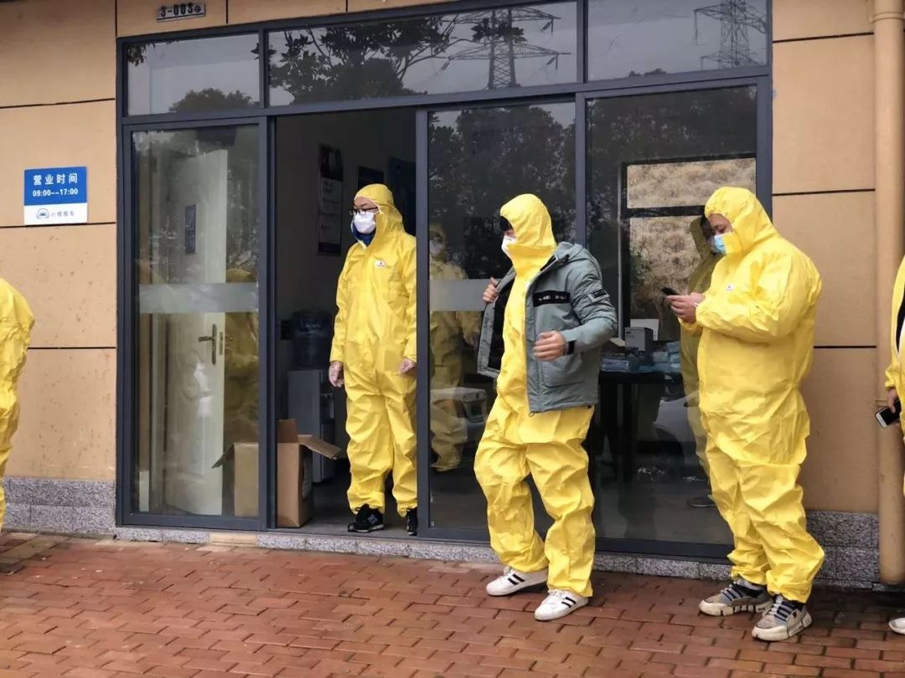

武汉网约车司机自述：“恨不得奉献出自己的每一分每一秒”
原文链接 备份链接 27.01.2020本文字数：1459，阅读时长大约2.5分钟 导读：“我生活在武汉，我热爱武汉。只有城市健康了，我们居民才会有舒适的小日子。” 作者 | 第一财经 刘佳 清晨6点的武汉，天还没亮，身穿黄色防护服、戴 …


作者 | 相欣 编辑 | 康晓
出品｜深网·腾讯小满工作室
欢迎下载腾讯新闻APP，阅读更多优质资讯

编者按：通过湖北各城普通民众的视角和抗疫行动，记录这一段我们永不会忘记的历史。是为抗疫日记系列之二，来自武汉支援医护车队的一名滴滴司机刘邱斌。
内容由刘邱斌口述，深网整理编辑。

1月24日，除夕
我是武汉黄陂的，之前一直在武汉这边做服装生意，直到去年有段时间服装生意不景气，就开始跑滴滴，跑了三个月，没想到赶上疫情爆发。
上午，我们车队队长在微信群里发了一条通知，说是为了协助疫情防控工作，要应征一些滴滴司机组建“医护保障车队”，负责在武汉运送物资和接送医务人员。
我本来已经打算回家过年了，看到这个消息也没想太多，立马就报名了。
我们那个车队有30多个司机，当时还有另外四个司机也报了名，我们算是保障车队第一批。
下午，按照通知要求我到了车队的武昌站点领取物资，包括防护服、医用口罩、消毒液之类，工作人员给我们做了基本的防护培训，比如防护服要怎么穿，拉链必须拉到位，戴口罩和摘口罩的正确方式，用后怎么处理口罩和防护服。工作人员还特意叮嘱我们，要勤洗手、常通风，每天要给车辆做多次消毒。
我们这批大概有100人，分布在武汉不同的站点，我在的武昌站点有20多人。

我姑姑他们一家子也在武汉，吃年夜饭的时候他们喊我过去，开始我没去。那时候还没有确切的任务下来，我就在家一直盯着手机等群里发通知。后来一直没什么动静，我就去姑姑家吃了个饭，晚上回家接着等消息。
凌晨2点，任务来了，是第二天需要我们去接送的医护人员名单信息。因为第二天要早起，群里有些人已经睡了，我抢到了第一个任务单，是去接一个协和医院的护理人员。我告诉自己要赶紧睡觉，明天必须保证精力充沛。

1月25日，大年初一
早上不到六点我就起了，按照昨晚发的位置信息，我去百步亭那边接到了这个医护人员，他是协和医院放射科的。
因为是第一单，我甚至还有点激动。这次疫情关系到整个武汉甚至全国，很多医护人员都奋战在一线，需要有人来解决他们的出行问题。我妹妹在儿童医院工作，这段时间也一直在一线，所以我感受更深。我觉得我应该出一份力。

我知道，现在医院里的情况一定忙到不行，情况危急必须重视起来。这位医护人员特意叮嘱我，一定要做好防护。
从早上开始，我们这一批司机的微信群消息就没停过。一条接一条的接送需求刚发到群里，马上就被司机们认领了。
这是场没有硝烟的“战争”，医护工作者是站在最前线的“战士”，他们在前面为我们挡风遮雨，那我们就为他们保障后勤。
关键时期、特殊时期，谁都不想掉链子，大家心里都绷着一根弦，准时完成任务。考虑到有司机可能会因为临时状况没法接送，当时还组织了一批“后备军”司机。
接触这些医护工作者，我能感觉到他们压力很大，很疲惫。也有让我感动的时刻。
凌晨一点，我去协和医院接一个大夫下班，他家人特别担心大半夜回不了家。因为这时候武汉市里的车子都不让走了，但是医护人员的出行需求是很大的。我领到任务的同时，这个大夫的家人也拿到了我的联系方式。他妻子特意提前给我打了个电话，问我那么晚能不能接他老公回家，我说你放心，肯定能。她在电话那头感谢个不停。

右为司机刘邱斌
1月26日，大年初二
今天依旧是在微信群里领任务。任务发下来，哪个司机最先报名，就交给他去执行。
经过一天半的接送，一些问题也随之而来。因为滴滴软件在武汉暂时停止了服务，我们只能靠微信群通过人工调度来承接任务，可问题就在于，有的司机家离接送医护人员的位置和医院距离很远，这样一来会白白耗费很多路上的时间。
下午的时候，滴滴给我们和医护人员专门上线了一个线上派单系统。这些医护人员只要通过手机认证就能直接下单，跟平时打车一样，我们通过软件来接单。这样根据定位，车辆调度就不再是问题，资源合理利用，也节约时间提高效率。
更重要的是，之前只通过微信群，很多医护工作者都不知道我们车队的存在，现在一天下来，我能拉十多单。
早上6点半到10点，是医院上下班交接的时间，这时候单也比较多；然后就是下午4点到10点多。
收车回家之后，我们也都不闲着，群里的司机会讨论哪里单量大，哪里更需要我们，或者互相交换信息分配下离得近的单。公司那边也会跟我们讲，要多在医院附近转一转，一开始我是负责协和医院的，线上接单开通之后，我们就主要去武汉中心医院、协和肿瘤医院、武汉三医院这些地方。

1月27日，大年初三
今天，医护保障车队人数增加到200人，社区保障车队的1000名司机也在陆续到位。看滴滴公布的消息，说我们车队现在接入了武汉协和、武汉市中心医院、武汉三院7个院区，有2000多名医务工作者的注册手机号被录入了系统。
几天下来，吃饭成了难题，因为武汉封城，很多地方都关门了，我准备了很多泡面在车上吃，有时候其他师傅看到有卖吃的的就帮我顺道捎过来。除了吃饭、睡觉，这几天基本上都是在车上度过。

今天早上我又接到了一个协和医院的护士。她一上车就给我递过来几个橘子，说是自家种的，还有一些别的吃的。她知道现在外面吃饭很困难，我一下子就被暖到了。真的，特别温暖，越是这种时期越能感受到人性的善。
我们穿的防护服都是一次性的，脱了就不能用。因为是连体防护服，上厕所有点不方便。路边的洗手间还开放，我们有时候就得憋着，或者通过手机地图找。
1月28日，大年初四
今天遇到一个事情让我特别感动。
下午我接了个单，送一个医生去中心医院，这家医院是专门接收重症病患的。离医院还有一段距离的时候，这个医生就让我靠边停车，我问他怎么了，他说现在疫情严重，担心我被传染，说这段路他自己走过去就行。
手机新闻推送的那些消息让我意识到疫情的严重性，看着每天增加的确诊人数很揪心。一开始我心里也不太有底，慢慢接触到这些接送的医护人员之后，也深知必须要做好防护，提高免疫力。武汉是这场疫情的起发点，医护人员奋战在一线，我们武汉市民也得全力配合。说实话，中国人在面对灾难面前表现的积极、勇敢、团结真的令人感动。
至于家里人，一开始他们觉得我干这件事很危险，不太理解，后来看见我每天跟他们分享做了什么事之后，他们很支持我。我是外公外婆带大的，他们80多岁了，和我舅舅住在一起，我很想他们，等忙完了这段我第一件事就是回去看他们。
作者手记：
第一次联系刘邱斌的时候，他正在接送医护人员的路上，我跟他说方便的时候我给他打过去。
中午1点终于等到了他的消息。电话那头，叫车软件的播报声时不时响起，远在北京的我突然觉得一切离我很近。特殊时期，我们都宅在家里避免不必要的外出，嘱咐亲人朋友做好防护。
身在前线，我问刘邱斌怕不怕被感染，他说不怕；我后来又问了他一遍，他说真没想那么多，作为武汉人，他觉得自己必须得做点什么。这个问题抛给刘邱斌的同时，我也在问自己，我俩年纪一样大，换作是我，我会不会毅然前往？
中午聊天结束，我才知道他还没吃午饭。下午我把整理好的内容发给他确认，想再约他聊聊，直到晚上他才回复，说感谢我们记录他的故事。晚上9点多，刘邱斌正在给车子充电，他说想等等看还有没有预约单。
所有聊天都是在他工作间隙进行的，我甚至觉得每一通电话、每一条微信都是对他的打扰，但同时我也相信这些记录有必要并且有价值。
刘邱斌只是一个小的缩影，很多人都在默默付出，医护工作人员在最前方为我们遮风挡雨，司机、外卖员、快递员这些出行、餐饮、物流领域普通角色则在努力保障他们的后勤。疫情面前，谁能置身事外？我们也都在能力范围内做自己该做的事。


感谢您的阅读，欢迎在文后留言并点击“在看”，留言点赞第一名且60以上，获得一个月腾讯视频会员哦~ （截止时间：下周一下午18：00）

扫码查看腾讯新闻客户端相关文章


本文版权归“腾讯新闻”所有，如需转载请在文后留言，经允许后方可转载，并在文首注明来源、作者及编辑，文末附上深网二维码。
第529期

点击“阅读原文”，查看腾讯新闻客户端相关独家文章！
你“在看”我吗？

原文链接 备份链接 27.01.2020本文字数：1459，阅读时长大约2.5分钟 导读：“我生活在武汉，我热爱武汉。只有城市健康了，我们居民才会有舒适的小日子。” 作者 | 第一财经 刘佳 清晨6点的武汉，天还没亮，身穿黄色防护服、戴 …
原文链接 备份链接 封城，已经过去了一周。市内交通停运、机动车中心城区限行，让这座现代城市里习惯了汽车、地铁出行的人们突然之间陷入寸步难行的境地。 文 | 陈星萌、薛雨霏、谢婵、高逸佳 编辑 | 小豆 自1月23日10时武汉封城，到今天 …
原文链接 备份链接 记者/梁婷 实习记者/李一鸣 陈威敬 编辑/石爱华 刘汨 多位志愿司机与接送的医务人员自拍合影 自1月23日起，武汉市新型肺炎防控指挥部的几个通告切断了城区内外的公共交通。先后关闭了机场、火车站离汉通道。在停运全市公 …
原文链接 备份链接 *************▲************* 一名志愿车队司机和坐车的医护人员合影。 （受访者供图/图） 全文共*3020*字，阅读大约需要8分钟。 看着后视镜里，这个女医生崩溃得痛哭流涕，李小熊强压悲伤， …
原文链接 备份链接 受到武汉新发布限行令的影响，也出于对车主健康的担忧，善缘车队停止接送医护人员。26日上午，在一些武汉本地的互助群里，提供免费住宿或为医生送餐的武汉市民们还在热议：目前我们还没收到通知，是不是还可以自发去接送医生？ 本 …